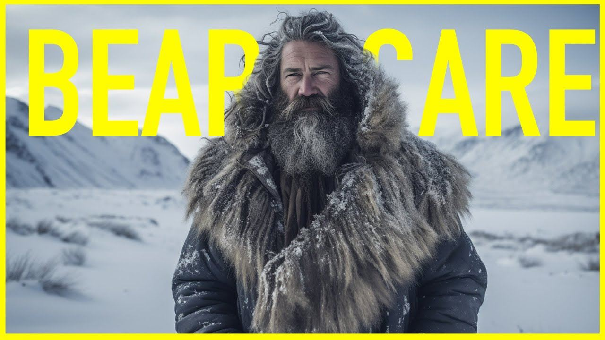

Beard Care in Cold Weather: Winter-Proofing Your Beard
Winter attacks a beard from both directions: cold, dry air outside pulls moisture out of the hair, and heated indoor air — just as dry — keeps pulling when you come in. The result is the seasonal beard slump: brittle, itchy, flaky, and breaking at the ends by February. Beardster's (@Beardster) cold-weather tips in the video below come from exactly this fight. This guide sets out the full winter adjustment: what changes in the routine, what stays, and how to protect the beard outdoors.
What winter actually does
Beard hair holds moisture in balance with the air around it. Winter air cannot hold moisture, so the beard gives its own up — hour by hour, all season. The skin under the beard dries the same way, which is why beardruff peaks in winter: it is seasonal dryness, not a new hygiene failure.
Heating makes it worse, and long hot showers — winter's temptation — strip what little oil the skin has left. Understanding this as an environment problem, not a product failure, tells you the fix: add moisture in, seal it there, and stop stripping it out.
The winter adjustments
Moisturise more: oil daily without exception in winter, and consider a beard balm or butter on top — in cold weather, balm graduates from styling product to barrier, sealing the oil and moisture under a protective layer against wind and dry air. The two-layer system mirrors what you already know from the beard basics: care underneath, protection on top.
Wash less, condition more. Drop to one or two washes a week if your skin allows, condition every wash, and keep shower water warm rather than hot on the beard. A weekly hot towel wash is the exception that proves the rule — deep clean, deep condition, then seal it all in.
Outdoors: wind, scarves, and static
Wind is winter's multiplier — it strips moisture faster than still cold air and tangles the beard as it goes. A balm layer before going out is the beard's version of a windbreaker. Scarves and high collars protect too, but wool and rough knits friction the beard for hours; a smooth layer between scarf and beard — or the beard tucked deliberately rather than crushed — prevents the matted, broken under-chin zone every winter beard grows.
Static flyaways in dry indoor air settle with a touch of oil on the palms smoothed over the surface. Spring will come; the beard that survives winter intact is the one whose owner adjusted in November instead of repairing in March.
Watch: Cold Weather Beard Care Tips
Video: “Cold Weather Beard Care Tips” by Beardster (@Beardster) · Watch on YouTube
Shop the gear
Everything in this guide runs on the right gear: a durag that holds compression without slipping, a cap that stays put, and fabric that treats your hair right. The durag.store launch lineup is built to that standard — dual-layer construction, long tails, and stitching made to survive the routine. Join the launch list and use code GOLDSTANDARD for 15% off your first order.
Keep learning
- Beard Care Basics: The Four-Step Routine Every Beard Needs — Basic · Beard Care
- Beard Oil: How Much, How Often, and the Application Most Men Get Wrong — Basic · Beard Care
- The Barber's Hot Towel Beard Wash: The Full Method at Home — Intermediate · Beard Care
Sources: Video — “Cold Weather Beard Care Tips” by Beardster (@Beardster), youtube.com. Guide written by the durag.store Wave Lab.